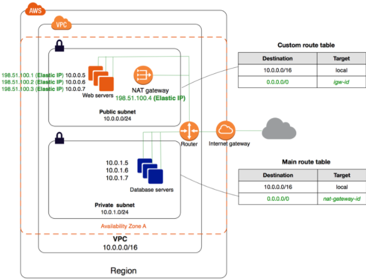

-
Attempt
25 -

Marks Obtained
0 / 65 -

Your score
0.0% -

Time Taken
00 H 00 M 13 S -

Result
Failed
| No | Domain | Total Question | Correct | Incorrect | Unattempted | Marked as Review |
|---|---|---|---|---|---|---|
|
|
|
|
|
|
|
|
|
|
|
|
|
|
|
|
|
|
|
|
|
|
|
|
|
|
|
|
|
|
|
|
|
|
|
|
|
|
|
|
|
|
|
|
|
|
|
|
You are working in a Global Pharma firm, having its Head Office in Washington & Branch offices in Chicago & Paris. The Firm has a two-tier Intranet website deployed in US-East-1 Region & database servers deployed on-premise at Head office. It has a Direct Connect link to VPC and it is connected to Chicago & Paris via WAN links while each of these offices has separate internet links from the local ISP. Recently they faced link outage issues with WAN links that resulted in the isolation of Branch office from the head office. They are looking for a cost-effective backup solution that could be set-up quickly without any additional devices and links. What would be the most suitable connectivity option in this scenario?
Correct Answer – B
Using AWS VPN CloudHub, VGW can be used to connect multiple locations. Each location using existing Internet link & customer routers will set up a VPN connection to VGW. BGP Peering will be configured between customer gateway router & VGW using unique BGP ASN at each location. VGW will receive prefixes from each location & re-advertise to other peers. Direct Connect links terminating on this VGW will also have connectivity with these locations via VGW.
- Option A is incorrect as Washington Corporate office is already having a Direct Connect link to VGW in us-east-1, so no additional VPN needs to be set up from the Washington office.
- Option C is incorrect as the Washington Head office already has Direct Connect connectivity with VGW in us-east-1, so the office in Chicago and Paris should set up VPN to VGW in the us-east-1 region so that connectivity can be established between these 3 offices.
- Option D is incorrect as with this connectivity solution, connectivity will be established between Chicago and Washington offices but not with Paris as it is connected to different VGW.
For more information on using VPC Cloudhub, please refer to the following URL:
An application currently consists of an EC2 Instance hosting a Web application. The Web application connects to an AWS RDS database. What should be used to ensure that the database layer is highly available?
Correct Answer – D
AWS Documentation mentions the following:
Amazon RDS Multi-AZ deployments provide enhanced availability and durability for Database (DB) Instances, making them a natural fit for production database workloads. When you provision a Multi-AZ DB Instance, Amazon RDS automatically creates a primary DB Instance and synchronously replicates the data to a standby instance in a different Availability Zone (AZ). Each AZ runs on its own physically distinct, independent infrastructure, and is engineered to be highly reliable. In case of an infrastructure failure, Amazon RDS performs an automatic failover to the standby (or to a read replica in the case of Amazon Aurora) so that you can resume database operations as soon as the failover is complete. Since the endpoint for your DB Instance remains the same after a failover, your application can resume database operation without the need for manual administrative intervention.
For more information on AWS RDS Multi-AZ, please visit the following URL:
https://aws.amazon.com/rds/details/multi-az/
Try now labs related to this question
This lab walks you through to the creation and testing of an Amazon Relational Database Service (Amazon RDS) database. We will create an RDS MySql Database and test the connection using MySQL Workbench.
- Credit Needed10
- Time 0 : 50
An application currently allows users to upload files to an S3 bucket. You want to ensure that the file name for each uploaded file is stored in a DynamoDB table. How could this be achieved? (SELECT TWO)
Correct Answers – A and C
You can create a Lambda function containing the code to process the file, and add the name of the file to the DynamoDB table.
You can then use an Event Notification from the S3 bucket to invoke the Lambda function whenever the file is uploaded.
For more information on Amazon S3 Event Notifications, please visit the following URL:
Try now labs related to this question
This lab walks you through creation and usage of AWS Serverless service called AWS Lambda. In this lab, we will create a sample lambda function which is triggered on S3 Object upload event and makes a copy of that object on another S3 Bucket.
- Credit Needed10
- Time 0 : 30
A company is migrating an on-premises MySQL database to AWS.
Following are the key requirements:
a) Ability to support an initial size of 5TB
b) Ability to allow the database to double in size
c) Replication Lag to be kept under 100 milliseconds
Which Amazon RDS engine would meet these requirements?
Correct Answer – D
The AWS Documentation explains how AWS Aurora fulfills the mentioned requirements, as follows:
Amazon Aurora (Aurora) is a fully managed, MySQL- and PostgreSQL-compatible relational database engine. It combines the speed and reliability of high-end commercial databases with the simplicity and cost-effectiveness of open-source databases. It delivers up to five times the throughput of MySQL and up to three times the throughput of PostgreSQL without requiring changes to most of your existing applications.
All Aurora Replicas return the same data for query results with minimal replica lag—usually, much lesser than 100 milliseconds after the primary instance has written an update.
For more information on AWS Aurora, please visit the following URL:
http://docs.aws.amazon.com/AmazonRDS/latest/UserGuide/Aurora.Overview.html
Try now labs related to this question
This lab walks you through the creation and testing of an Amazon Aurora database. We will create an Aurora MySQL Database and and test the connection.
- Credit Needed10
- Time 1 : 0
You are working for a global software firm having offices in various continents. The pre-sales team needs to provide a new application demo to a prospective customer. For this, they are looking urgently for a separate temporary connection between 3 regional offices at Sydney, London, and Tokyo & Demo VPC at the us-west-1 region. Also, there should be connectivity between these offices for data synchronization of the new applications.
You are planning to set up a VPN connection from these offices to VGW at us-west-1. You have arranged Internet links along with routers at each regional offices and VPN parameter list. What are the other factors required to meet this connectivity solution? (SELECT TWO)
Correct Answers – B, D
AWS VPN CloudHub provides connectivity between spoke location over VPN connection. In this case, VGW acts as a Hub & re-advertise prefixes received from one regional office to another regional office. For this connectivity to establish, each regional site should have non-overlapping IP prefixes & BGP ASN should be unique at each site. If BGP ASN is not unique, additional ALLOWS-IN will be required.
- Option A is incorrect as VGW by default acts as a Hub and spoke & no additional configuration needs to be done at VGW end.
- Option C is incorrect as the router needs to have BGP peering only with VGW & not with routers in other locations.
- Option E is incorrect as regional office can set up VPN connection to VGW of the different regions as well.
For more information on using AWS VPN CloudHub, refer to the following URL:
An application needs to have a database hosted in AWS. The database will be hosted on an EC2 Instance. The application's expected performance is 2 IOPS/GiB, with the ability to burst to 2,000 IOPS for extended periods of time. What is the MOST suitable storage type that could be used by the underlying EC2 instance hosting the database?
Answer - C
AWS recommends that for small workloads it is better to use General Purpose SSD volume (gp2) than Throughput Optimized HDD volumes. (st1).
- Please refer the below link
As per the AWS docs :
Throughput Optimized HDD (st1) Volumes
Throughput Optimized HDD (st1) volumes provide low-cost magnetic storage that defines performance in terms of throughput rather than IOPS. This volume type is a good fit for large, sequential workloads such as Amazon EMR, ETL, data warehouses, and log processing. Bootable st1 volumes are not supported.
Throughput Optimized HDD (st1) volumes, though similar to Cold HDD (sc1) volumes, are designed to support frequently accessed data.
Amazon Elastic File System (Amazon EFS) provides simple, scalable file storage for use with Amazon EC2. With Amazon EFS, storage capacity is elastic, growing and shrinking automatically as you add and remove files, so your applications have the required storage when they need it. The service is designed to be highly scalable, highly available, and highly durable. Amazon EFS file systems store data and metadata across multiple Availability Zones in a region and can grow to petabyte scale, drive high levels of throughput, and allow massively parallel access from Amazon EC2 instances to your data.
Since the database is not going to be used that frequently, you should ideally choose the EBS General Purpose SSD over EBS provisioned IOPS SSD.
- For more information on AWS EBS Volumes, please visit the following URL:
You are working for an electrical appliance company that has web-application hosted in AWS. This is a two-tier web application with web-servers hosted in VPC’s & on-premise data-center. You are using a Network Load balancer in the front end to distribute traffic between these servers. You are using instance Id for configuring targets for Network Load Balancer. Some clients are complaining about the delay in accessing this website.
To troubleshoot this issue, you are looking for a list of Client IP address having longer TLS handshake time. You have enabled access logging on Network Load balancing with logs saved in Amazon S3 buckets. Which tool could be used to quickly analyze a large amount of log files without any visualization in a cost-effective way?
Correct Answer – A
Amazon Athena is a suitable tool for querying Network Load Balancers logs. In the above case since a large amount of logs are saved in S3 buckets from Network load balancer, Amazon Athena can be used to query logs and generate required details of client IP address and TLS handshake time.
- Option B is incorrect as processing a large number of logs directly from the S3 console will be a time-consuming process.
- Option C is incorrect as using a third-party tool will not be a cost-effective solution.
- Option D is incorrect as in the above case, we require only details of Client IP details along with TLS handshake time for troubleshooting purposes. Amazon QuickSight will be useful in case you need data visualization.
For more information on using Amazon Athena to query Network Load Balancer logs, refer to the following URL:
An application allows users to upload images to an S3 bucket. Initially, these images will be downloaded quite frequently, but after some time, the images might only be accessed once a week and the retrieval time should be as minimal as possible.
What could be done to ensure a cost-effective solution? (SELECT TWO)
Correct Answers – B and D
- Store the images initially in Standard storage since they are accessed frequently. Define Lifecycle Policies to move the images to Infrequent Access storage to save the costs.
- Amazon S3 Infrequent access is perfect if you want to store data that is not frequently accessed and is much more cost-effective than Option C i.e. Amazon S3 Standard. Also, if you choose Amazon Glacier with expedited retrievals, you defeat the whole purpose of the requirement, because this option would result in increased costs.
For more information on AWS Storage classes, please visit the following URL:
Try now labs related to this question
This lab walks you through to Amazon Simple Storage Service. Amazon S3 has a simple web services interface that you can use to store and retrieve any amount of data, at any time, from anywhere on the web. In this lab we will demonstrate AWS S3 by creating a sample S3 bucket, uploading an object to S3 bucket and setting up bucket permission and policy.
- Credit Needed10
- Time 0 : 30
A company needs a solution to store and archive corporate documents and has determined Amazon Glacier as the right solution. It is required that data is delivered within 5 minutes of a retrieval request.
Which feature of Amazon Glacier could help to meet this requirement?
Correct Answer – B
The AWS Documentation mentions the following:
Expedited retrievals allow you to quickly access your data when occasional urgent requests for a subset of archives are required.
For more information on AWS Glacier Retrieval, please visit the following URL:
https://docs.aws.amazon.com/amazonglacier/latest/dev/downloading-an-archive-two-steps.html
You are working for a global financial company. Company locations spread across various countries upload transaction details data to S3 bucket in the US-West region. A large amount of data is uploaded on a daily basis from each of these locations simultaneously. You are using Amazon Athena to query this data & create reports using Amazon QuickSight to create a daily dashboard to the management team. In some cases, while running queries, you are observing Amazon S3 exception errors.
Also, in the monthly bills, a high percentage of cost is associated with Amazon Athena. Which of the following could be helpful in eliminating S3 errors while querying data and reducing the cost associated with queries? (SELECT TWO)
Correct Answers – B and C
AWS Athena pricing is based upon per query and the amount of data scanned in each query. In the above case, each regional office is uploading a large amount of data simultaneously, this data needs to be partitioned based upon location & date. A separate Workgroup can be created based upon users, teams, application or workloads. This will lead to minimizing the amount of data scanned for each query, improving performance & reducing cost.
- Option A is incorrect as partitioning the data on user credentials is irrelevant here.
- Option D is incorrect as a single Workgroup will not decrease the amount of data scanned per query.
For more information on Partitioning data & using Workgroups, refer to the following URLs:
You are planning to use Auto Scaling groups to maintain the performance of your web application. How would you ensure that the scaling activity has sufficient time to stabilize without executing another scaling action?
Correct Answer – B
AWS Documentation mentions the following:
The Cooldown period is a configurable setting for your Auto Scaling group which ensures that it doesn't launch or terminate additional instances before the previous scaling activity takes effect. After the Auto Scaling group dynamically scales using a simple Scaling Policy, it waits for the Cooldown period to complete before resuming scaling activities.
For more information on Auto Scaling Cooldown, please visit the following URL:
https://docs.aws.amazon.com/autoscaling/ec2/userguide/Cooldown.html
Try now labs related to this question
AWS Auto Scaling will automatically scale resources as needed to align to your selected scaling strategy, This lab walks you through to use Auto Scaling to automatically launch or terminate EC2’s instances based on user defined policies, schedules and health checks.
- Credit Needed10
- Time 0 : 55
A company hosts a popular web application that connects to an Amazon RDS MySQL DB instance running in a private VPC subnet created with default ACL settings. The IT Security department has identified a DoS attack from a suspecting IP. How would you protect the subnets from this attack?
Correct Answer – C
Options A and B are invalid because the Security Groups block traffic by default. You can use NACLs as an additional security layer for the subnet to deny traffic.
Option D is invalid since just changing the Inbound Rules is sufficient.
AWS Documentation mentions the following:
A Network Access Control List (ACL) is an optional layer of security for your VPC that acts as a firewall for controlling traffic in and out of one or more subnets. You might set up network ACLs with rules similar to your security groups in order to add an additional layer of security to your VPC.
For more information on Network Access Control Lists, please visit the following URL:
https://docs.aws.amazon.com/AmazonVPC/latest/UserGuide/VPC_ACLs.html
Try now labs related to this question
-
Learn how to build Public and Private subnets from scratch.
-
VPC wizard will not be used. So every component required to build public and private subnets will be created and configured manually.
-
This will give an in-depth understanding of internal components of VPC and subnets.
- Credit Needed10
- Time 0 : 30
A company is planning to allow its users to upload and read objects from an S3 bucket. Due to a large number of users, the read/write traffic will be very high. How would the architect maximize Amazon S3 performance?
Correct Answer – C
Previously Amazon S3 performance guidelines recommended randomizing prefix naming with hashed characters to optimize performance for frequent data retrievals. You no longer have to randomize prefix naming for performance, and can use sequential date-based naming for your prefixes.
For more information on how to ensure performance in S3, please visit the following URL on page 634, paragraph 6 under the section "Best Practices Design Patterns: Optimizing Amazon S3 Performance" :
Try now labs related to this question
This lab walks you through to Amazon Simple Storage Service. Amazon S3 has a simple web services interface that you can use to store and retrieve any amount of data, at any time, from anywhere on the web. In this lab we will demonstrate AWS S3 by creating a sample S3 bucket, uploading an object to S3 bucket and setting up bucket permission and policy.
- Credit Needed10
- Time 0 : 30
An EC2 Instance setup in AWS will host an application that will make API calls to the Simple Storage Service. What would be an ideal way for the application to access the Simple Storage Service?
Correct Answer - D
AWS Documentation mentions the following:
You can use roles to delegate access to users, applications or services that normally don't have access to your AWS resources. It is not a good practice to use IAM credentials for a production-based application. It is always a good practice to use IAM Roles.
For more information on IAM Roles, please visit the following URL:
https://docs.aws.amazon.com/IAM/latest/UserGuide/id_roles.html
Videos are uploaded to an S3 bucket, and you need to provide access to users to view the same. What is the best way to do so, while maintaining a good user experience for all users regardless of the region in which they are located?
Correct Answer – B
AWS Documentation mentions the following to back up this requirement:
Amazon CloudFront is a web service that speeds up the distribution of static and dynamic web content, such as .html, .css, .js, and image files to your users. CloudFront delivers your content through a worldwide network of data centers called edge locations.
When a user requests content that you're serving with CloudFront, the user is routed to the edge location that provides the lowest latency (time delay) so that content is delivered with the best possible performance. If the content is already in the edge location with the lowest latency, CloudFront delivers it immediately. If the content is not in that edge location, CloudFront retrieves it from an Amazon S3 bucket or an HTTP server (for example, a web server) that you have identified as the source for the definitive version of your content.
Option A is incorrect. S3 Cross-region replication is a feature that enables an automatic and asynchronous copy of user data from one destination bucket to another destination bucket located in one of the other AWS regions. It is region-based rather than a global scale which is what the question is asking with regards to all users having a good experience, regardless of region locale.
For more information on Amazon CloudFront, please visit the following URL:
Try now labs related to this question
This lab walks you through to Amazon CloudFront creation and working. In this lab you will create an Amazon CloudFront distribution. It will distribute a publicly accessible image file stored in an Amazon S3 bucket.
- Credit Needed10
- Time 1 : 30
An organization has a requirement to store 10TB worth of scanned files across multiple availability zones. It plans to have a search application in place to search through the scanned files.
Which of the following options is ideal for implementing the search facility?
Correct Answer – C
With Amazon CloudSearch, you can quickly add rich search capabilities to your website or application. You don't need to become a search expert or worry about hardware provisioning, setup, and maintenance. With a few clicks in the AWS Management Console, you can create a search domain and upload the data that you want to make searchable, and Amazon CloudSearch will automatically provision the required resources and deploy a highly tuned search index.
You can easily change your search parameters, fine-tune search relevance, and apply new settings at any time. As your volume of data and traffic fluctuates, Amazon CloudSearch seamlessly scales to meet your needs.
For more information on AWS CloudSearch, please visit the link below:
For more information, please check the URL below:
Try now labs related to this question
This lab walks you through to AWS Elastic Beanstalk. In this lab, you will quickly deploy and manage a Java application in the AWS Cloud without worrying about the infrastructure that runs those applications.
- Credit Needed10
- Time 0 : 45
You are working for a global financial company. Company locations spread across various countries upload transaction data to S3 bucket in the US-West region. You will be using AWS Glue & Amazon Athena to further analyze this data. You are using Crawler that will scan all data from S3 buckets & populate Glue Data Catalog, to which Amazon Athena will query.
A large amount of CSV data is uploaded on a daily basis from all the global locations simultaneously. To decrease scanning time while scanning data in S3 buckets, you need to ensure only changes in datasets are scanned. Which of the following configurations would meet this requirement?
Correct Answer – D
AWS Glue keeps a track of processed data using Job Bookmark. Enabling Job Bookmark will help to scan only changes since the last bookmark and prevent the processing of whole data again.
- Option A is incorrect as resetting Job Bookmark in AWS Glue will reprocess all data & will not prevent the reprocessing of already scanned data.
- Option B is incorrect as disabling Job Bookmark will process all data each time.
- Option C is incorrect as pausing Job Bookmark will process incremental data since the last data scan but will not update state information. So, for the succeeding process, it will start scanning all data since the last bookmark.
For more information on Job Bookmark in AWS Glue, please refer to the following URL,
A concern raised in your company is that developers could potentially delete production-based EC2 resources. As a Cloud Admin, what would you do to help alleviate this concern? (SELECT TWO)
Correct Answers – A and B
Creating a separate AWS account for developers will help the organization to facilitate the highest level of resource and security isolation.
The AWS documentation gives us a clear picture of the scenarios when we need to consider creating multiple accounts.
When to Create Multiple Accounts
While there is no one-size-fits-all answer for how many AWS accounts a particular customer should have, most companies will want to create more than one AWS account because multiple accounts provide the highest level of resource and security isolation. Answering “yes†to any of the following questions is a good indication that you should consider creating additional AWS accounts:
- Does the business require administrative isolation between workloads?
Administrative isolation by account provides the most straightforward approach for granting independent administrative groups different levels of administrative control over AWS resources based on the workload, development lifecycle, business unit (BU) or data sensitivity.
- Does the business require limited visibility and discoverability of workloads?
Accounts provide a natural boundary for visibility and discoverability. Workloads cannot be accessed or viewed unless an administrator of the account enables access to users managed in another account.
- Does the business require isolation to minimize the blast radius?
Blast-radius isolation by account provides a mechanism for limiting the impact of a critical event such as a security breach in case of the unavailability of AWS Region or Availability Zone, account suspensions, etc. Separate accounts help define boundaries and provide natural blast-radius isolation.
- Does the business require strong isolation of recovery and/or auditing data?
Businesses that are required to control access and visibility to auditing data due to regulatory requirements can isolate their recovery data and/or auditing data in an account separate from where they run their workloads (e.g., writing CloudTrail logs to a different account).
For more information, please check the URL below:
Tags enable you to categorize your AWS resources in different ways, for example, by purpose, owner or environment. This is useful when you have many resources of the same type — you can quickly identify a specific resource based on the tags you've assigned to it. Each tag consists of a key and an optional value, both of which you define.
- For more information on tagging AWS resources, please refer to the below URL:
The question says that the developers should not have the option to delete production-based resources. So, option A and B completely keep the developers away from production resources.
You wish to use MFA, which means developers can delete the production-based resources if they know MFA code which is not recommended.
AWS Multi-Factor Authentication (MFA) is a simple best practice that adds an extra layer of protection on the top of your user name and password. With MFA enabled, when a user signs in to an AWS website, they will be prompted for their user name and password (the first factor—what they know), as well as for an authentication code from their AWS MFA device (the second factor—what they have). Taken together, these multiple factors provide increased security for your AWS account settings and resources.
Organizations have good control over newly created accounts rather than old AWS accounts. Because they can easily monitor and maintain (few) assigned permissions on accounts and they delete those accounts once the required task will be done.
A company needs to monitor the read and write IOPS metrics for its AWS MySQL RDS instance and send real-time alerts to its Operations team. Which AWS services could help to accomplish this? (SELECT TWO)
Correct Answers – B and E
Amazon CloudWatch may be used to monitor IOPS metrics from the RDS instance and Amazon Simple Notification Service, to send the notification if an alarm is triggered.
For more information on CloudWatch metrics, please refer to the link below.
Try now labs related to this question
This lab walks you through the Creating Rules in the Events Section of Cloudwatch and adding a SNS target. It will tested using EC2 Instance state events
- Credit Needed10
- Time 0 : 30
You run an ad-supported photo-sharing website using S3 to serve photos to visitors of your site. At some point, you find out that other sites have been linking to photos on your site, causing loss to your business. What would be an effective method to mitigate this?
Correct Answer – C
You can distribute private content using a signed URL that is valid for only a short time—possibly for as little as a few minutes. Signed URLs that are valid for such a short period are good for distributing content on-the-fly to a user for a limited purpose, such as distributing movie rentals or music downloads to customers on demand.
For more information on Signed URLs, please visit the link below:
Try now labs related to this question
This lab walks you through to Amazon Simple Storage Service. Amazon S3 has a simple web services interface that you can use to store and retrieve any amount of data, at any time, from anywhere on the web. In this lab we will demonstrate AWS S3 by creating a sample S3 bucket, uploading an object to S3 bucket and setting up bucket permission and policy.
- Credit Needed10
- Time 0 : 30
You are working with a global IT firm that has web-application hosted in AWS. This is a two-tier web application with web-servers behind Application load balancers. A new application is developed for which you need to analyze performance at each node.
These parameters will be used as a reference before making this application into commercial services & henceforth for any operational challenges. You are using AWS X-Ray for this purpose. Which of the following would help to get traces while ensuring cost is within limits?
Correct Answer – D
The sampling rate can be lower to collect a significant number of requests statistically, to get optimum traces, and have a cost-effective solution.
- Option A is incorrect as the Default Sampling rate is conservative but can be further customized to sample at a lower rate based upon your sampling requirements.
- Option B is incorrect as Sampling at a higher rate will not only collect a lot of data but also incur an additional cost.
- Option C is incorrect as Filter expression can be used to narrow down results from the number of traces scanned during a defined period. It will not affect the number of traces scanned.
For more information on X-Ray parameters, refer to the following URL,
Your IT Security department has mandated that all data on EBS volumes created for underlying EC2 Instances needs to be encrypted. What should be used to achieve this?
Correct Answer – A
Option B is incorrect - The AWS Certificate manager can be used to generate SSL certificates used to encrypt traffic in transit, but not at rest.
Option C is incorrect - This is used to issue tokens while using the API gateway for traffic in transit.
Option D is incorrect - This is used for secure access to EC2 Instances.
The AWS Documentation mentions the following on AWS KMS:
AWS Key Management Service (AWS KMS) is a managed service that makes it easy for you to create and control the encryption keys used to encrypt your data. AWS KMS is integrated with other AWS services including Amazon Elastic Block Store (Amazon EBS), Amazon Simple Storage Service (Amazon S3), Amazon Redshift, Amazon Elastic Transcoder, Amazon WorkMail, Amazon Relational Database Service (Amazon RDS), and others to make it simple to encrypt your data with encryption keys that you manage.
For more information on AWS KMS, please visit the following URL:
https://docs.aws.amazon.com/kms/latest/developerguide/overview.html
A company wants to achieve redundancy for its EBS volumes hosted in AWS in the most cost-effective manner. How could this be achieved?
Correct Answer – A
The AWS Documentation mentions the following:
Amazon Elastic Block Store (Amazon EBS) provides persistent block storage volumes to be used with Amazon EC2 instances in the AWS Cloud. Each Amazon EBS volume is automatically replicated within its Availability Zone to protect you from component failure, offering high availability and durability. Amazon EBS volumes offer the consistent and low-latency performance needed to run your workloads. With Amazon EBS, you can scale your usage up or down within minutes – all while paying a low price for only what you provision.
For more information on EBS, please visit the following URL:
Note:
Amazon EBS Availability & Durability:
Amazon EBS volumes are designed to be highly available and reliable. At no additional charge to you, Amazon EBS volume data is replicated across multiple servers in an Availability Zone to prevent the loss of data from the failure of any single component.
Amazon EBS volumes are designed for an annual failure rate (AFR) of between 0.1% - 0.2%, where failure refers to a complete or partial loss of the volume, depending on the size and performance of the volume. This makes EBS volumes 20 times more reliable than typical commodity disk drives, which fail with an AFR of around 4%. For example, if you have 1,000 EBS volumes running for 1 year, you should expect 1 to 2 EBS volumes will have a failure. EBS also supports a snapshot feature, which is a good way to take point-in-time backups of your data.
- For more details on Amazon EBS Availability & Durability, please refer to the below link.
We need to notice two things, first - the question says that we need to achieve it in a cost-effective manner; second - we are testing whether you understood the core functionality of the service in the CSAA exam. You can expect this kind of question in the AWS exam as well. So, try to understand the question and answer.
In the exam, if they mentioned specifically about the replication based on the multi-AZ, then you can go with Option C. So based on the question, the answer will differ.
A mobile application hosted on AWS needs to access a Data Store in AWS. With each item measuring around 10 KB in size, the latency of data access must remain consistent despite very high application traffic. What would be an ideal Data Store for the application?
Correct Answer - A
AWS Documentation mentions the following:
Amazon DynamoDB is a fast and flexible NoSQL database service for all applications that need consistent, single-digit, millisecond latency at any scale. It is a fully managed cloud database and supports both document and key-value store models. Its flexible data model, reliable performance, and automatic scaling of throughput capacity make it a great fit for mobile, web, gaming, ad tech, IoT, and many other applications.
For more information on AWS DynamoDB, please visit the following URL:
Try now labs related to this question
This lab walks you through to Amazon DynamoDB features. In this lab, we will create a table in Amazon DynamoDB to store information and then query that information from the DynamoDB table.
- Credit Needed10
- Time 0 : 30
A company is planning to design a Microservices architectured application that will be hosted in AWS. This entire architecture needs to be decoupled whenever possible. Which of the following services could help to achieve this? (SELECT TWO)
Correct Answers – A and D
AWS Documentation mentions the following:
Amazon Simple Queue Service (SQS) is a fully managed message queuing service that makes it easy to decouple and scale microservices, distributed systems, and serverless applications. Building applications from individual components that perform a discrete function improves scalability and reliability and is best practice design for modern applications. SQS makes it simple and cost-effective to decouple and coordinate the components of a cloud application. Using SQS, you can send, store, and receive messages between software components at any volume, without losing messages or requiring other services to be available always.
- For more information on AWS SQS, please visit the following URL:
- For more information on AWS SNS, please visit the following URL:
Note:
The question asks - which services can be used to work on decoupling of microservices whenever required?
Now we can use both services to work with microservices. Please find the links for your reference:
- https://aws.amazon.com/sns/
- https://aws.amazon.com/blogs/compute/implementing-enterprise-integration-patterns-with-aws-messaging-services-point-to-point-channels/
The below point is from AWS SNS FAQs:
Q: How is Amazon SNS different from Amazon MQ?
Amazon MQ, Amazon SQS, and Amazon SNS are messaging services that are suitable for anyone from startups to well-established enterprises. If you're using messaging with existing applications and want to move your message to the cloud quickly and easily, we recommend you consider Amazon MQ. It supports industry-standard APIs and protocols so you can switch from any standards-based message broker to Amazon MQ without rewriting the messaging code in your applications. If you are building brand new applications in the cloud, we recommend you consider Amazon SQS and Amazon SNS. Amazon SQS and SNS are lightweight, fully managed message queue and topic services that scale almost infinitely and provide simple, easy-to-use APIs. You can use Amazon SQS and SNS to decouple and scale microservices, distributed systems, serverless applications, and improve reliability.
You are working for a construction firm that is using Amazon WorkDocs for sharing project planning document with third-party external contract teams. Last week there was an incident where a sensitive document was shared by a user that leaked financial information to external third-party users.
Security team revoked access for all users and only nominated users should be allowed to grant access to use WorkDocs or share links with third-party users. How could this be achieved? (SELECT TWO)
Correct Answers – A and C
To restrict all users to invite external users and to share WorkDoc links publicly, you can create a Power user who will be responsible to perform this activity.
- Option B is incorrect as in this case, all users will be able to invite external users.
- Option D is incorrect as in this case, all users will be able to share links with external users.
For more information on managing access on Amazon WorkDocs, refer to the following URL:
Your architecture for an application currently consists of EC2 Instances sitting behind a classic ELB. The EC2 Instances are used to serve an application and are accessible through the internet. What could be done to improve this architecture in the event that the number of users accessing the application increases regularly?
Correct Answer – B
AWS Documentation mentions the following:
AWS Auto Scaling monitors your applications and automatically adjusts the capacity to maintain steady, predictable performance at the lowest possible cost. Using AWS Auto Scaling, it is easy to setup application scaling for multiple resources across multiple services in minutes.
For more information on AWS Auto Scaling, please visit the following URL:
Try now labs related to this question
AWS Auto Scaling will automatically scale resources as needed to align to your selected scaling strategy, This lab walks you through to use Auto Scaling to automatically launch or terminate EC2’s instances based on user defined policies, schedules and health checks.
- Credit Needed10
- Time 0 : 55
You are working as an AWS Architect for a retail website having an application deployed on EC2 instance. You are using the SQS queue for storing messages between Web server & database servers. Due to heavy load on the website, there are some cases where clients are getting price details before logging to the website.
To resolve this issue, you are planning to migrate to the SQS FIFO queue that will preserve the order of messages. You have created a new FIFO queue with message delay time per queue instead of per message, deleting an existing standard queue. What are the prerequisites to have a smooth migration to the SQS FIFO queue? (SELECT TWO)
Correct Answers – C and D
FIFO queue uses Message Deduplication ID & Message Group ID per message. Message Deduplication ID is used as a token while sending messages. The message Group ID is used as a tag, based upon various groups so that messages in a group process in an orderly manner.
- Option A is incorrect as Each FIFO queue requires a Message group ID. If there are no multiple ordered message groups, you can specify the same message group ID.
- Option B is incorrect as if the application is using identical message bodies, a unique deduplication ID is required per message while for the application using unique message bodies, content-based deduplication ID should be used.
For more information on moving from an SQS Standard Queue to SQS FIFO queues, refer to the following URL:
You are the architect for a business intelligence application that reads data from a MySQL database hosted on an EC2 Instance. The application experiences a high number of read and write requests.
Which Amazon EBS Volume type can meet the performance requirements of this database?
Correct Answer – A
Since there is a high-performance requirement with the high IOPS needed, one needs to opt for EBS Provisioned IOPS SSD.
The below snapshot from AWS Documentation mentions the need for using Provisioned IOPS for better IOPS performance for database-based applications.
For more information on AWS EBS Volume types, please visit the URL below:
An organization is planning to use AWS for its production roll-out. The organization wants to implement automation for deployment such that it will automatically create a LAMP stack, download the latest PHP installable from S3, and set up the ELB. Which AWS service would meet these requirements for making an orderly deployment of the software?
Correct Answer – A
The Elastic Beanstalk is an easy-to-use service for deploying and scaling web applications and services.
We can simply upload code and Elastic Beanstalk automatically handles the deployment, from capacity provisioning, load balancing, Auto-Scaling, to application health monitoring. Meanwhile, we can retain full control over the AWS resources used in the application and access the underlying resources at any time.
Hence, option A is the correct answer.
For more information on launching a LAMP stack with Elastic Beanstalk, please refer to the link below:
https://aws.amazon.com/getting-started/projects/launch-lamp-web-app/
How is AWS CloudFormation different from AWS Elastic Beanstalk?
AWS CloudFormation and AWS Elastic Beanstalk services are designed to complement each other.
AWS Elastic Beanstalk provides an environment to easily deploy and run applications in the cloud. It is integrated with developer tools and provides a one-stop experience for you to manage the lifecycle of your applications.
AWS CloudFormation is a convenient provisioning mechanism for a broad range of AWS resources. It supports the infrastructure needs of many different types of applications such as existing enterprise applications, legacy applications, applications built using a variety of AWS resources and container-based solutions (including those built using AWS Elastic Beanstalk).
Elastic Beanstalk is a Platform where you deploy an application. Cloudformation is where you define a stack of resources.
Elastic BeanStalk is good for the relatively narrow use case of PaaS applications and Cloudformation is good for the relatively broad use of defining Infrastructure as Code.
The question is "Which WS service would meet the requirements for making an orderly deployment of the software?
We are not provisioning a broad range of AWS resources here. So, Elastic Beanstalk will be a suitable answer.
Try now labs related to this question
This lab walks you through to AWS Elastic Beanstalk. In this lab, you will quickly deploy and manage a Java application in the AWS Cloud without worrying about the infrastructure that runs those applications.
- Credit Needed10
- Time 0 : 45
Your company is planning to use the API Gateway service to manage APIs for developers and users. There is a requirement to segregate access rights for both developers and users. How could this be accomplished?
Correct Answer - A
AWS Documentation mentions the following:
You can control access to Amazon API Gateway with IAM permissions by controlling access to the following two API Gateway component processes:
- To create, deploy, and manage an API in API Gateway, you must grant the API developer permissions to perform the required actions supported by the API management component of API Gateway.
- To call a deployed API or to refresh the API caching, you must grant the API caller permissions to perform required IAM actions supported by the API execution component of API Gateway.
For more information on permissions for the API gateway, please visit the following URL:
https://docs.aws.amazon.com/apigateway/latest/developerguide/permissions.html
Try now labs related to this question
This lab walks you through the steps on how to create IAM Users, IAM Groups and adding IAM User to the IAM Group in AWS IAM service
- Credit Needed10
- Time 0 : 20
You have 2 development environments hosted in 2 different VPCs in an AWS account in the same region. There is now a requirement to access the resources of one VPC from another. How could this be accomplished?
Correct Answer – C
AWS Documentation mentions the following:
A VPC peering connection is a networking connection between two VPCs that enables you to route traffic between them privately. Instances in either VPC can communicate with each other as if they are within the same network. You can create a VPC peering connection between your own VPCs, with a VPC in another AWS account, or with a VPC in a different AWS Region.
For more information on VPC peering, please visit the URL below:
https://docs.aws.amazon.com/AmazonVPC/latest/UserGuide/vpc-peering.html
Your company is planning to use the EMR service available in AWS to run its big data framework and wants to minimize the cost of running the EMR service. How would you achieve this?
Correct Answer - B
AWS Documentation mentions the following:
Spot Instances in Amazon EMR provide an option to purchase Amazon EC2 instance capacity at a reduced cost as compared to On-Demand purchasing.
For more information on Instance types for EMR, please visit the following URLs:
You have an S3 bucket hosted in AWS that is used to store the promotional videos you upload. You need to provide users access to S3 bucket for a limited duration of time. How could this be achieved?
Correct Answer - B
AWS Documentation mentions the following:
All objects by default are private. Only the object owner has permission to access these objects. However, the object owner can optionally share objects with others by creating a pre-signed URL, using their own security credentials, to grant time-limited permission to download the objects.
For more information on pre-signed URLs, please visit the URL below.
Try now labs related to this question
This lab walks you through to Amazon Simple Storage Service. Amazon S3 has a simple web services interface that you can use to store and retrieve any amount of data, at any time, from anywhere on the web. In this lab we will demonstrate AWS S3 by creating a sample S3 bucket, uploading an object to S3 bucket and setting up bucket permission and policy.
- Credit Needed10
- Time 0 : 30
An application currently writes a large number of records to a DynamoDB table in one region. There is a requirement for a secondary application to retrieve new records written to the DynamoDB table every 2 hours and process the updates accordingly. What would be an ideal method to ensure that the secondary application gets the relevant changes from the DynamoDB table?
Correct Answer – C
AWS Documentation mentions the following:
A DynamoDB Stream is an ordered flow of information about changes to items in an Amazon DynamoDB table. When you enable a stream on a table, DynamoDB captures information about every modification to data items in the table.
Whenever an application creates, updates or deletes items in the table, DynamoDB Streams write a stream record with the primary key attribute(s) of the items that were modified. A stream record contains information about a data modification to a single item in a DynamoDB table. You can configure the stream so that the stream records capture additional information, such as the "before" and "after" images of modified items.
For more information on DynamoDB Streams, please visit the URL below:
http://docs.aws.amazon.com/amazondynamodb/latest/developerguide/Streams.html
Try now labs related to this question
This lab walks you through to Amazon DynamoDB features. In this lab, we will create a table in Amazon DynamoDB to store information and then query that information from the DynamoDB table.
- Credit Needed10
- Time 0 : 30
You are working as an AWS Architect for an IT firm that is developing a new application for traders in the Capital market. There would be multiple trading orders initiated by clients. You have multiple EC2 instance with Auto-Scaling groups to process these trades parallelly. Also, each trade should be stateful and processed independently. What could be used to meet this requirement?
Correct Answer – C
Messages which are part of a specific message group will be processed in a strict orderly manner using Message group ID. This message group ID helps to process messages by multiples consumers in FIFO manner while keeping session data of each trade initiated by users.
- Option A is incorrect as the purpose of Receive request Attempt ID is adding a deduplication token for receive message, this will not suffice requirement of processing multiple message from different trades independently.
- Option B is incorrect as SQS FIFO sequence number is non-sequence number added to each message, it will not suffice requirement of processing multiple message from different trades independently.
- Option D is incorrect as the SQS FIFO queue with Deduplication ID will not suffice requirement of multiple message being process parallelly by multiple consumers with separate session data for each.
For more information on managing SQS FIFO queues, refer to the following URL:
Your IT Security department has mandated that all the traffic flowing in and out of EC2 instances needs to be monitored. The EC2 instances in question are launched in a VPC. Which services would you use to achieve this?
Correct Answer – B
AWS Documentation mentions the following:
VPC Flow Logs is a feature that enables you to capture information about the IP traffic going to and from network interfaces in your VPC. Flow log data is stored using Amazon CloudWatch Logs. After you've created a flow log, you can view and retrieve its data in Amazon CloudWatch Logs.
For more information on VPC Flow Logs, please visit the following URL:
Note:
The question asks to monitor all traffic flowing in and out of EC2 instances. Now you have to launch EC2 instance inside the VPC. As there is no other Option available, to monitor the navigation of IP traffic, we use VPC Flow Logs.
Now coming to the question - why not CloudTrail?
Before venturing into it, let's look into the types of log categories we have in AWS.
1. AWS Infrastructure Logs - AWS CloudTrail, Amazon VPC Flow Logs
2. AWS Service Logs - Amazon S3, AWS Elastic Load Balancing, Amazon CloudFront, AWS Lambda, AWS Elastic Beanstalk, etc.,
3. Host Based Logs - Messages, Security, NGINX/Apache/IIS, Windows Event Logs, Windows Performance Counters, etc.,
AWS CloudTrail: it is used to record AWS API calls for your account like,
- who made the API call?
- when was the API call made?
- what was the API call?
- which resources were acted upon in the API call?
- where was the API calls made form and made to?
NOTE:
AWS has launched a new feature called VPC Traffic Mirroring, which is used to capture and inspect network traffic at scale. To know more about this feature, please check the link below.
A company is currently utilizing Redshift cluster as their production warehouse. As a cloud architect, you are tasked to ensure that the disaster recovery is in place. Which would be the best option in addressing this issue?
Correct Answer – B
The below diagram shows that snapshots are available for Redshift clusters enabling them to be available in different regions:

For more information on managing Redshift Snapshots, please visit the following URL:
https://docs.aws.amazon.com/redshift/latest/mgmt/managing-snapshots-console.html
You have an AWS RDS PostgreSQL database hosted in the Singapore region. You need to ensure that a copy of the database exists and that the data is asynchronously copied. What would be helpful to fulfill this requirement?
Correct Answer – B
AWS Documentation mentions the following:
Amazon RDS Read Replicas enable you to create one or more read-only copies of your database instance within the same AWS Region or in a different AWS Region. Updates made to the source database are then asynchronously copied to your Read Replicas. In addition to providing scalability for read-heavy workloads, Read Replicas can be promoted to become a standalone database instance when needed.
For more information on Read Replicas, please visit the following URL:
https://aws.amazon.com/rds/details/read-replicas/
Note:
When you enable Multi-AZ for the database then you are enabling synchronous replication rather than asynchronous replication mentioned in the question.
When you create a Read Replica, you first specify an existing DB instance as the source. Then Amazon RDS takes a snapshot of the source instance and creates a read-only instance from the snapshot. Amazon RDS then uses the asynchronous replication method for the DB engine to update the Read Replica whenever there is a change to the source DB instance.
You can use Read Replica promotion as a data recovery scheme if the source DB instance fails.
For more information, please click the link given below:
https://docs.aws.amazon.com/AmazonRDS/latest/UserGuide/USER_ReadRepl.html
Try now labs related to this question
This lab walks you through to the creation and testing of an Amazon Relational Database Service (Amazon RDS) database. We will create an RDS MySql Database and test the connection using MySQL Workbench.
- Credit Needed10
- Time 0 : 50
Your current log analysis application takes more than four hours to generate a report of the top 10 users of your web application. You have been asked to implement a system that can report this information in real time, ensure that the report is always up to date, and handle increases in the number of requests to your web application. Which of the following is a cost-effective option to fulfill these requirements?
Correct Answer – C
AWS Documentation mentions the below:
Amazon Kinesis makes it easy to collect, process, and analyze real-time, streaming data so you can get timely insights and react quickly to new information. Amazon Kinesis offers key capabilities to cost effectively process streaming data at any scale, along with the flexibility to choose the tools that best suit the requirements of your application. With Amazon Kinesis, you can ingest real-time data such as application logs, website clickstreams, IoT telemetry data, and more into your databases, data lakes and data warehouses, or build your own real-time applications using this data. Amazon Kinesis enables you to process and analyze data as it arrives and respond in real-time instead of having to wait until all your data is collected before the processing can begin.
For more information on AWS Kinesis, please see the below link:
https://aws.amazon.com/kinesis/
You are working as an AWS Architect in a global financial firm. They provide daily consolidated reports to their clients for trades in stock markets. For large amount of data processing, they store daily trading transaction data in S3 buckets which triggers AWS Lambda function. This function submits a new AWS Batch job in Job queue. These queues use compute resources having EC2 On Demand instance with Amazon ECS-optimized AMI having enough resources to complete the job. Due to large volumes of data there has been requirement to increase storage size & create a customised AMI.
You have been working on new application on compute resources having a combination of EC2 On Demand instance & EC2 Spot Instance with this customised AMI. While you are performing a trial for this new application even though it has enough memory/CPU resources, your job is stuck in Runnable state. Which of the following can be used to get Job into starting state?
Correct Answer – A
AWS Batch Job sends log information to CloudWatch logs which requires awslogs log driver to be configured on compute resources having customized AMI. In case of Amazon ECS-optimized AMI, these drivers are pre-configured.
- Option B is incorrect as AWS Batch supports both customized AMI as well as Amazon ECS-optimized AMI, this is not a reason for Job stuck in Runnable state.
- Option C is incorrect as a Job moves into Runnable state only after all dependencies are processed. If there are any dependencies, Job stays in Pending state, not Runnable state.
- Option D is incorrect as Compute resource can be an On Demand Instance or a Spot Instance. If there are enough compute resource available to process the job, it will move into Starting state.
For more information on AWS Batch Job state & troubleshooting, if a job stuck in Runnable state, refer to following URLs,
There is a requirement to load a lot of data from your on-premises network to AWS S3. What can be used for this data transfer? (SELECT TWO)
Correct Answers – B and C
AWS documentation mentions the following about the above services:
With a Snowball, you can transfer hundreds of terabytes or petabytes of data between your on-premises data centers and Amazon Simple Storage Service (Amazon S3). AWS Snowball uses Snowball appliances and provides powerful interfaces that you can use to create jobs, transfer data, and track the status of your jobs to completion. By shipping your data in Snowballs, you can transfer large amounts of data at a significantly faster rate than if you were transferring that data over the Internet, saving you time and money.
AWS Direct Connect links your internal network to an AWS Direct Connect location over a standard 1-gigabit or 10-gigabit Ethernet fiber-optic cable. One end of the cable is connected to your router, the other to an AWS Direct Connect router. With this connection in place, you can create virtual interfaces directly to public AWS services (for example, to Amazon S3) or to Amazon VPC, bypassing Internet service providers in your network path.
For more information on Direct Connect, please refer to the below URL:
- Option A is Incorrect because AWS Data Pipeline is a web service that you can use to automate the movement and transformation of data. Here, we are not transforming the data and we are just moving the data from on-premises to S3.
- Option D is Incorrect because AWS VPN is used just for connecting on-premises to S3 and not for moving the data.
For more information on AWS Snowball, please refer to the below URL:
With a Redshift cluster in AWS, you are trying to use SQL Client tools from an EC2 Instance, but aren't able to connect to the Redshift Cluster. What must you do to ensure that you are able to connect to the Redshift Cluster from the EC2 Instance?
Correct Answer – B
AWS Documentation mentions the following:
By default, any cluster that you create is closed to everyone. IAM credentials only control access to the Amazon Redshift API-related resources: the Amazon Redshift console, Command Line Interface (CLI), API, and SDK. To enable access to the cluster from SQL client tools via JDBC or ODBC, you use security groups:
- If you are using the EC2-Classic platform for your Amazon Redshift cluster, you must use Amazon Redshift security groups.
- If you are using the EC2-VPC platform for your Amazon Redshift cluster, you must use VPC security groups.
For more information on Amazon Redshift, please refer to the URL below:
http://docs.aws.amazon.com/redshift/latest/mgmt/overview.html
You currently work for a company that is specialized in baggage management. GPS devices installed on all the baggages deliver the coordinates of the unit every 10 seconds. You need to process these coordinates in real-time from multiple sources. Which tool should you use to process the data?
Correct Answer – D
The AWS Documentation mentions the following:
Amazon Kinesis makes it easy to collect, process, and analyze real-time, streaming data so you can get timely insights and react quickly to new information. Amazon Kinesis offers key capabilities to cost-effectively process streaming data at any scale, along with the flexibility to choose the tools that best suit the requirements of your application.
With Amazon Kinesis, you can ingest real-time data such as video, audio, application logs, website clickstreams, and IoT telemetry data for machine learning, analytics, and other applications. Amazon Kinesis enables you to process and analyze data as it arrives and respond instantly instead of having to wait until all your data is collected before the processing can begin.
For more information on Amazon Kinesis, please visit the link below.
You are planning to host a web and MySQL database application in an AWS VPC. The database should only be accessible by the web server. What would you change to fulfill this requirement?
Correct Answer – D
Security group associated with the DB instance should allow port 3306 traffic from EC2 instance. The AWS Documentation additionally mentions the following:
A security group acts as a virtual firewall for your instance to control inbound and outbound traffic. When you launch an instance in a VPC, you can assign up to five security groups to the instance. Security groups act at the instance level, not the subnet level. Therefore, each instance in a subnet in your VPC could be assigned to a different set of security groups. If you don't specify a particular group at launch time, the instance is automatically assigned to the default security group for the VPC.
For more information on VPC Security Groups, please visit the link below.
https://docs.aws.amazon.com/AmazonVPC/latest/UserGuide/VPC_SecurityGroups.html
A company has a requirement for block level storage that should be able to store 800GB of data. Also, encryption of the data is required. What can be used in this case?
Correct Answer - A
For block level storage, consider EBS Volumes.
Options B and C are incorrect since they provide object level storage.
Option D is incorrect since this provides file level storage.
For more information on EBS Volumes, please visit the following URL:
https://docs.aws.amazon.com/AWSEC2/latest/UserGuide/EBSVolumes.html
You are working as an AWS Architect for a media firm. The firm has large text files which needs to be converted into Audio files. They are using S3 buckets to store this text files.
AWS Batch is used to process these files along with Amazon Polly. For compute environment you have a mix of EC2 On Demand & Spot instance. Critical Jobs are required to be completed quickly while non-critical Jobs can be scheduled during non-peak hours. While using AWS Batch, management wants a cost-effective solution with no performance impact. Which of the following Job Queue can be selected to meet this requirement?
Correct Answer – B
You can create multiple Job queue with different priority & mapped Compute environments to each Job queue. When Job queues are mapped to a same compute environment, queues with higher priority are evaluated first.
- Option A is incorrect as Multiple queues need to be created for each Job type. In the requirement, critical Jobs will be processed using EC2 instance while low priority jobs will be using Job queue with Spot Instance.
- Option C is incorrect as Priority for a Job queue is selected in descending order, higher priority Job queue is preferred first.
- Option D is incorrect as Multiple queues need to be created for each Job type. In the requirement, critical Jobs will be processed using EC2 instance while low priority jobs will be using Job queue with Spot Instance. Also, higher priority Job queue is preferred first.
For more information on Job queues in AWS Batch, refer to the following URL:
As the cloud administrator of company, you notice that one of the EC2 instances is restarting frequently. There is a need to troubleshoot and analyze the system logs. What can be used in AWS to store and analyze the log files from the EC2 Instance?
Correct Answer – D
You can use Amazon CloudWatch Logs to monitor, store, and access your log files from Amazon Elastic Compute Cloud (Amazon EC2) instances, AWS CloudTrail, and other sources.
For more information on CloudWatch Logs, please visit the following URL:
https://docs.aws.amazon.com/AmazonCloudWatch/latest/logs/WhatIsCloudWatchLogs.html
Note: The question is not about compliance or auditing or tracking any kind of malicious activity or to monitor API calls in your account. If that would have been the case we w'd have used cloudtrail as it provides info such as who made the request, when the request was made, what was the request, what was the response etc.
In this question we need cloudwatch logs to store and analyze logs from EC2 to find why the instance is restarting frequently.
Your company has migrated their production environment into AWS VPC 6 months ago. As a cloud architect, you are required to revise the infrastructure and ensure that it is cost-effective in the long term. There are more than 50 EC2 instances that are up and running all the time to support the business operation. What can you do to lower the cost?
Correct Answer – A
When you have instances that will be used continuously and throughout the year, the best option is to buy reserved instances. By buying reserved instances, you actually allocate an instance for the entire year or the duration you specify with a reduced cost.
To understand more on reserved instances, please visit the below URL:
https://aws.amazon.com/ec2/pricing/reserved-instances/
Your organization is building a collaboration platform for which they chose AWS EC2 for web and application servers and MySQL RDS instance as the database. Due to the nature of the traffic to the application, they would like to increase the number of connections to RDS instance. How could this be achieved?
Correct Answer – B
You manage your DB engine configuration through the use of parameters in a DB parameter group . DB parameter groups act as a container for engine configuration values that are applied to one or more DB instances.
A default DB parameter group is created if you create a DB instance without specifying a customer-created DB parameter group. Each default DB parameter group contains database engine defaults and Amazon RDS system defaults based on the engine, compute class, and allocated storage of the instance. You cannot modify the parameter settings of a default DB parameter group; you must create your own DB parameter group to change parameter settings from their default value. Note that not all DB engine parameters can be changed in a customer-created DB parameter group.
If you want to use your own DB parameter group, you simply create a new DB parameter group, modify the desired parameters, and modify your DB instance to use the new DB parameter group. All DB instances that are associated with a particular DB parameter group get all parameter updates to that DB parameter group.
For more information, please visit the URL below:
Try now labs related to this question
This lab walks you through to the creation and testing of an Amazon Relational Database Service (Amazon RDS) database. We will create an RDS MySql Database and test the connection using MySQL Workbench.
- Credit Needed10
- Time 0 : 50
You are working for a Pharma firm. You are using S3 buckets to save a large amount of sensitive project document for new medicine research. You need to ensure all data at rest in these buckets is encrypted. All the keys need to be managed by the inhouse Security team. Which of the following can be used as a best practice to encrypt all data securely?
Correct Answer - A
SInce Key Management will be done by Inhouse security team, Customer Managed CMK need to be used. Customer managed CMK will generate plain text Data Key & encrypted Data Keys. All project related sensitive documents will be encrypted using these plain text Data Keys. After encryption , plain text Data keys needs to be deleted to avoid any inappropriate use & encrypted Data Keys along with encrypted Data is stored in S3 buckets.
While decryption, encrypted Data Key is decrypted using Customer CMK into plain text Key which is further used to decrypt documents. This Envelope Encryption ensures that Data is protected by Data key which is further protected by another key.
- Option B is incorrect, since all keys needs to manage by inhouse customer Security team, AWS managed CMK’s cannot be used.
- Option C is incorrect as It's not a best practise to save data key file in plain text format. All plain text data keys should be deleted & only encrypted data keys need to be saved.
- Option D is incorrect since all keys needs to manage by inhouse customer Security team, AWS managed CMK’s cannot be used. Also, all plain text data keys should be deleted & only encrypted data keys need to be saved.
For more information on AWS KMS, refer to following URLs,
A company is building a service using Amazon EC2 as a worker instance that will process an uploaded audio file and generate a text file. You must store both of these files in the same durable storage until the text file is retrieved. You do not know what the storage capacity requirements are. Which storage option is both cost-efficient and scalable?
Correct Answer – C
Amazon S3 is the best storage option for this. It is durable and highly available.
For more information on Amazon S3, please refer to the below URL:
Try now labs related to this question
This lab walks you through to Amazon Simple Storage Service. Amazon S3 has a simple web services interface that you can use to store and retrieve any amount of data, at any time, from anywhere on the web. In this lab we will demonstrate AWS S3 by creating a sample S3 bucket, uploading an object to S3 bucket and setting up bucket permission and policy.
- Credit Needed10
- Time 0 : 30
You are working as an AWS developer for an online multiplayer game developing start-up company. Elasticache with Redis is used for gaming leaderboards along with application servers, to provide low latency and avoid stale data for these highly popular online games. Redis clusters are deployed within a dedicated VPC in the us-east-1 region.
Last week, due to configuration changes in Redis Clusters, the gaming application was impacted for two hours. To avoid such incidents, you have been requested to plan for secure access to all the new clusters. What would you prefer to use for secure access to Redis Clusters while accessing from EC2 instance, initialized in different VPC in the us-east-1 region? (SELECT TWO)
Correct Answer – C and F
To use Redis AUTH that will require users to provide a password before accessing Redis Cluster, in-transit encryption needs to be enabled on the cluster while creation of the cluster. For accessing Redis Cluster from EC2 instance in different VPCs from the same region, a VPC peering can be established between 2 VPCs.
- Option A is incorrect. For Redis AUTH, clusters must be enabled with in-transit encryption during initial deployment.
- Option B is incorrect. Transit VPC solution is suitable to access Redis Clusters from EC2 instance in VPC created in different regions. Since, in this requirement, both VPCs are in the same region, VPC peering is a correct option.
- Option D is incorrect as VPN Connections will be required to access the Redis Cluster from on-prem servers.
- Option E is incorrect. For Redis AUTH, clusters must be enabled with in-transit encryption during initial deployment, not At-Rest encryption.
For more information on Authentication with Redis & Accessing Redis Clusters from a different VPC, refer to the following URLs:
Your company is utilizing CloudFront to distribute its media content to multiple regions. The content is frequently accessed by users. As a cloud architect, which of the following options would help you improve the performance of the system?
Correct Answer – C
You can control how long your objects stay in a CloudFront cache before CloudFront forwards another request to your origin. Reducing the duration allows you to serve dynamic content. Increasing the duration means your users get better performance because your objects are more likely to be served directly from the edge cache. A longer duration also reduces the load on your origin.
For more information on CloudFront cache expiration, please refer to the following link:
http://docs.aws.amazon.com/AmazonCloudFront/latest/DeveloperGuide/Expiration.html
Try now labs related to this question
This lab walks you through to Amazon CloudFront creation and working. In this lab you will create an Amazon CloudFront distribution. It will distribute a publicly accessible image file stored in an Amazon S3 bucket.
- Credit Needed10
- Time 1 : 30
You have been instructed by your supervisor to devise a disaster recovery model for the resources in the AWS account. The key requirement while devising the solution is to ensure that the cost is at a minimum. Which disaster recovery mechanism would you employ in such a scenario?
Correct Answer – A
Since the cost needs to be at a minimum, the best option is to back up all the resources and then perform a restore in the event of a disaster.
For more information on disaster recovery, please refer to the below link:
An application consists of the following architecture:
a. EC2 Instances are in multiple AZ’s behind an ELB.
b. The EC2 Instances are launched via an Auto Scaling Group.
c. There is a NAT instance used so that instances can download updates from the internet.
Due to the high bandwidth being consumed by the NAT instance, it has been decided to use a NAT Gateway. How could this be implemented?
Correct Answer – C
One can simply start using the NAT Gateway service and stop using the deployed NAT instances. But you need to ensure that the NAT Gateway is deployed in the public subnet.
- For more information on migrating to a NAT Gateway, please visit the following URL:
A company has an application hosted in AWS. This application consists of EC2 Instances that sit behind an ELB. The following are the requirements from an administrative perspective:
a) Must be able to collect and analyze logs with regard to ELB’s performance.
b) Ensure that notifications are sent when the latency goes beyond 10 seconds.
What should be used to achieve this requirement? (SELECT TWO)
Correct Answer – A and C
When you use CloudWatch metrics for an ELB, you can get the amount of read requests and latency out of the box.
For more information on using CloudWatch with the ELB, please visit the following URL:
https://docs.aws.amazon.com/elasticloadbalancing/latest/classic/elb-cloudwatch-metrics.html
Elastic Load Balancing provides access logs that capture detailed information about requests sent to your load balancer. Each log contains information such as the time when the request was received, the client's IP address, latencies, request paths, and server responses. You can use these access logs to analyze traffic patterns and to troubleshoot issues.
For more information on using ELB logs, please visit the following URL:
https://docs.aws.amazon.com/elasticloadbalancing/latest/classic/access-log-collection.html
Your company would like to leverage the AWS storage option and integrate it with the current on-premises infrastructure. Additionally, due to business requirements, low latency access to all the data is a must. Which of the following options would be best suited for this scenario?
Correct Answer – C
AWS Documentation mentions the following:
If you need low-latency access to your entire dataset, first configure your on-premises gateway to store all your data locally. Then asynchronously back up point-in-time snapshots of this data to Amazon S3.
This configuration provides durable and inexpensive offsite backups that you can recover to your local data center or Amazon EC2. For example, if you need replacement capacity for disaster recovery, you can recover the backups to Amazon EC2.
For more information on the Storage Gateway, please visit the following URL:
Note:
Cached volumes – You store your data in Amazon Simple Storage Service (Amazon S3) and retain a copy of frequently accessed data subsets locally. Cached volumes offer substantial cost savings on primary storage and minimize the need to scale your storage on-premises. You also retain low-latency access to your frequently accessed data.
Stored volumes – If you need low-latency access to your entire dataset, first configure your on-premises gateway to store all your data locally. Then asynchronously back up point-in-time snapshots of this data to Amazon S3.
This configuration provides durable and inexpensive offsite backups that you can recover to your local data center or Amazon EC2. For example, if you need replacement capacity for disaster recovery, you can recover the backups to Amazon EC2.
If you see the Cached volumes primary function to reduce cost and low latency (For frequently accessed data or recently accessed data), however, In the question, the requirement is to maintain all data with low latency. So, Stored volume is the correct answer.
Please check the below link to know more about it.
An IT company has a set of EC2 Instances hosted in a VPC. They are hosted in a private subnet. These instances now need to access resources stored in an S3 bucket. The traffic should not traverse the internet. The addition of which of the following would help to fulfill this requirement?
Correct Answer - A
A VPC endpoint enables you to privately connect your VPC to supported AWS services and VPC endpoint services powered by PrivateLink without requiring an internet gateway, NAT device, VPN connection, or AWS Direct Connect connection. Instances in your VPC do not require public IP addresses to communicate with resources in the service. Traffic between your VPC and the other service does not leave the Amazon network.
For more information on AWS VPC endpoints, please visit the following URL:
https://docs.aws.amazon.com/AmazonVPC/latest/UserGuide/vpc-endpoints.html
You need to host a set of web servers and database servers in an AWS VPC. What would be a best practice in designing a multi-tier infrastructure?
Correct Answer – B
The ideal setup is to ensure that the web server is hosted in the public subnet so that it can be accessed by users on the internet. The database server can be hosted in the private subnet.
The below diagram from AWS Documentation shows how this can be setup:

For more information on public and private subnets in AWS, please visit the following URL:
https://docs.aws.amazon.com/AmazonVPC/latest/UserGuide/VPC_Scenario2.html
Try now labs related to this question
-
Learn how to build Public and Private subnets from scratch.
-
VPC wizard will not be used. So every component required to build public and private subnets will be created and configured manually.
-
This will give an in-depth understanding of internal components of VPC and subnets.
- Credit Needed10
- Time 0 : 30
An IT company wants to secure their resources in their AWS Account. Which of the following options would secure data at rest and in transit in AWS? (SELECT THREE)
Correct Answers – A, B and C
AWS documentation mentions the following:
Amazon EBS encryption offers you a simple encryption solution for your EBS volumes without the need for you to build, maintain, and secure your own key management infrastructure. When you create an encrypted EBS volume and attach it to a supported instance type, the following types of data are encrypted:
- Data at rest inside the volume
- All data moving between the volume and the instance
- All snapshots created from the volume
Data protection refers to protecting data while in-transit (as it travels to and from Amazon S3) and at rest (while it is stored on disks in Amazon S3 data centers). You can protect data in transit by using SSL or by using client-side encryption. You have the following options of protecting data at rest in Amazon S3.
- Use Server-Side Encryption – You request Amazon S3 to encrypt your object before saving it on disks in its data centers and decrypt it when you download the objects.
- Use Client-Side Encryption – You can encrypt data client-side and upload the encrypted data to Amazon S3. In this case, you manage the encryption process, the encryption keys, and related tools.
You can create a load balancer that uses the SSL/TLS protocol for encrypted connections (also known as SSL offload). This feature enables traffic encryption between your load balancer and the clients that initiate HTTPS sessions, and for connections between your load balancer and your EC2 instances.
For more information on securing data at rest, please refer to the below link:
https://d0.awsstatic.com/whitepapers/aws-securing-data-at-rest-with-encryption.pdf
Try now labs related to this question
This lab walks you through AWS Elastic Load Balancing. Elastic Load Balancing automatically distributes incoming application traffic across multiple Amazon EC2 instances in the cloud. In this lab, we will demonstrate elastic load balancing with 2 EC2 Instances.
- Credit Needed10
- Time 0 : 30
Your company currently has a set of EC2 Instances running a web application which sits behind an Elastic Load Balancer. You also have an Amazon RDS instance which is accessible from the web application. You have been asked to ensure that this architecture is self-healing in nature. What would fulfill this requirement? (SELECT TWO)
Correct Answers - A and D
The following diagram from AWS showcases a self-healing architecture where you have a set of EC2 servers as Web server being launched by an Auto Scaling Group.
AWS Documentation mentions the following:
Amazon RDS Multi-AZ deployments provide enhanced availability and durability for Database (DB) Instances, making them a natural fit for production database workloads. When you provision a Multi-AZ DB Instance, Amazon RDS automatically creates a primary DB Instance and synchronously replicates the data to a standby instance in a different Availability Zone (AZ). Each AZ runs on its own physically distinct, independent infrastructure, and is engineered to be highly reliable.
In case of an infrastructure failure, Amazon RDS performs an automatic failover to the standby (or to a read replica in the case of Amazon Aurora), so that you can resume database operations as soon as the failover is complete. Since the endpoint for your DB Instance remains the same after a failover, your application can resume database operation without the need for manual administrative intervention.
- For more information on Multi-AZ RDS, please refer to the below link:
Try now labs related to this question
This lab walks you through to the creation and testing of an Amazon Relational Database Service (Amazon RDS) database. We will create an RDS MySql Database and test the connection using MySQL Workbench.
- Credit Needed10
- Time 0 : 50
Your company has a set of EC2 Instances that access data objects stored in an S3 bucket. Your IT Security department is concerned about the security of this architecture and wants you to implement the following:
1) Ensure that the EC2 Instance securely accesses the data objects stored in the S3 bucket
2) Prevent accidental deletion of objects
What would be helpful to fulfill the requirements of the IT Security department? (SELECT TWO)
Correct Answers - B and D
AWS Documentation mentions the following:
IAM roles are designed so that your applications can securely make API requests from your instances, without requiring you to manage the security credentials that the applications use. Instead of creating and distributing your AWS credentials, you can delegate permission to make API requests using IAM roles
For more information on IAM Roles, please refer to the link below:
http://docs.aws.amazon.com/AWSEC2/latest/UserGuide/iam-roles-for-amazon-ec2.html
MFA Delete can be used to add another layer of security to S3 Objects to prevent accidental deletion of objects.
For more information on MFA Delete, please refer to the link below:
https://aws.amazon.com/blogs/security/securing-access-to-aws-using-mfa-part-3/
Try now labs related to this question
This lab walks you through to Amazon Simple Storage Service. Amazon S3 has a simple web services interface that you can use to store and retrieve any amount of data, at any time, from anywhere on the web. In this lab we will demonstrate AWS S3 by creating a sample S3 bucket, uploading an object to S3 bucket and setting up bucket permission and policy.
- Credit Needed10
- Time 0 : 30
You have a requirement to get a snapshot of the current configuration of resources in your AWS Account. Which service can be used for this purpose?
Correct Answer - C
AWS Documentation mentions the following:
With AWS Config, you can do the following:
- Evaluate your AWS resource configurations for desired settings.
- Get a snapshot of the current configurations of the supported resources that are associated with your AWS account.
- Retrieve configurations of one or more resources that exist in your account.
- Retrieve historical configurations of one or more resources.
- Receive a notification whenever a resource is created, modified or deleted.
- View relationships between resources. For example, you might want to find all resources that use a particular security group.
For more information on AWS Config, please visit the below URL:
http://docs.aws.amazon.com/config/latest/developerguide/WhatIsConfig.html
Your company is hosting an application in AWS. The application is read intensive and consists of a set of web servers and AWS RDS. It has been noticed that the response time of the application increases due to the load on the AWS RDS instance. Which of the following measures can be taken to scale the data tier? (SELECT TWO)
Correct Answers - A and D
AWS documentation mentions the following:
Amazon RDS Read Replicas provide enhanced performance and durability for database (DB) instances. This replication feature makes it easy to elastically scale out beyond the capacity constraints of a single DB Instance for read-heavy database workloads. You can create one or more replicas of a given source DB Instance and serve high-volume application read traffic from multiple copies of your data, thereby increasing aggregate read throughput. Read replicas can also be promoted when needed to become standalone DB instances.
For more information on AWS RDS Read Replica’s, please visit the URL below:
https://aws.amazon.com/rds/details/read-replicas/
Amazon ElastiCache is a web service that makes it easy to deploy, operate, and scale an in-memory data store or cache in the cloud. The service improves the performance of web applications by allowing you to retrieve information from fast, managed, in-memory data stores, instead of relying entirely on slower disk-based databases.
For more information on AWS ElastiCache, please visit the URL below:
https://aws.amazon.com/elasticache/